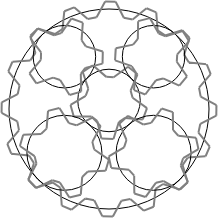

A circle $C$ of circumference $c$ centimetres has a smaller circle $S$ of circumference $s$ centimetres lying off-centre within it. Four other distinct circles, which we call "planets", with circumferences $p$, $p$, $q$, $q$ centimetres respectively ($p<q$), are inscribed within $C$ but outside $S$, with each planet touching both $C$ and $S$ tangentially. The planets are permitted to overlap one another, but the boundaries of $S$ and $C$ must be at least 1cm apart at their closest point.
Now suppose that these circles are actually gears with perfectly meshing teeth at a pitch of 1cm. $C$ is an internal gear with teeth on the inside. We require that $c$, $s$, $p$, $q$ are all integers (as they are the numbers of teeth), and we further stipulate that any gear must have at least 5 teeth.
Note that "perfectly meshing" means that as the gears rotate, the ratio between their angular velocities remains constant, and the teeth of one gear perfectly align with the groves of the other gear and vice versa. Only for certain gear sizes and positions will it be possible for $S$ and $C$ each to mesh perfectly with all the planets. Arrangements where not all gears mesh perfectly are not valid.
Define $g(c,s,p,q)$ to be the number of such gear arrangements for given values of $c$, $s$, $p$, $q$: it turns out that this is finite as only certain discrete arrangements are possible satisfying the above conditions. For example, $g(16,5,5,6)=9$.
Here is one such arrangement:

Let $G(n) = \sum_{s+p+q\le n} g(s+p+q,s,p,q)$ where the sum only includes cases with $p<q$, $p\ge 5$, and $s\ge 5$, all integers. You are given that $G(16)=9$ and $G(20)=205$.
Find $G(500)$.